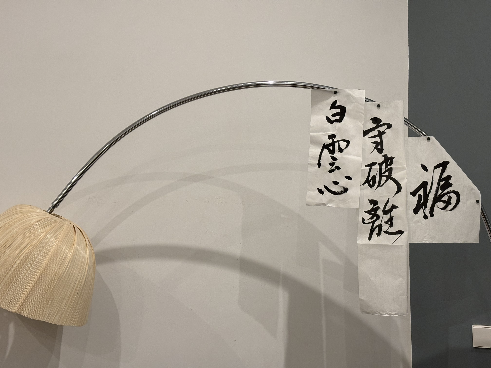

2024：世有道则见，无道则隐
这一年好像很漫长，实在发生了很多事情。好的，不好的，平淡的，荒唐的，很多很多，有的不堪回首，但更多的是希望能永远珍藏在心中的宝贵回忆。
这一年生活上最大的变化应该就是从中国搬到了西班牙，以及随之的很多事情和决定，一些我伤害了爱我的人的决定。
心态上也有很多起起落落的变化，最大的收获是感觉到自己活得更“安心”了，没那么迷茫了。我越来越接受自己的模样，我不再总是追问我到底想要的是什么。我理解了这不是一个正确的问题，因为欲望是没有尽头的，你永远有下一个想要的东西，没什么东西是所谓“真正”想要的。我感受到我拥有的不多也不少，我走的不快也不慢，我在成为想要成为的那个自己的路上。我越来越少的需要靠外界的认可，少到甚至表达欲都在丧失，因为我更珍视体验当下的生活。我仍然常常在挣扎，但是更加有心之所向素履以往的勇气了。
不过值得一提的是，做到这一点靠的不是思考，而恰恰是不思考。去看，去听，去做，去感受，而不是去思考。
如果按照去年的我的想法，大概就如年终总结里说的，这种避世的想法让我觉得自己在一点点变得麻木和卑劣。但是现在的我更心安理得的接受了这一点，「世有道则见，无道则隐」。
人大概对极其痛苦的事情会选择性遗忘，这好像是人的一种保护机制。至少对于我来说这是如此。可是我也知道其实遗忘从来都不是真的遗忘，痛苦的碎片总会以意想不到的形式回来纠缠自己，有时是在梦中让我心绞痛般地悲伤到嚎啕大哭，有时是现实中让我惊恐发作到痉挛不止。
我只能选择接受自己能力的边界，无论如何我应该先照顾好自己。我接受人生的无意义，接受世界的荒谬，接受安于现状的我。
尽管我确信拥有这个心态很大一部分是因为周围的环境因素，马德里的太阳在治愈着我。我不知道这个心态会持续多久，事实上一直持续这个心态也不一定就好，因为确实有些过于消极。随他去吧。「生命是用来体验的，心是用来破碎的」。至少我体验过。
回顾2024
足迹
这一年没去很多地方，如上所述，主要就是干了一件事，从国内生活搬到了马德里生活。
为什么是西班牙呢？现实因素先掠过不谈，情感的种子大概早早就生根了。对西班牙的向往，大概可以追溯到少女时代曾被三毛笔下的那个浪漫的世界所惊艳，「为什么流浪远方，为了我梦中的橄榄树」。
总有人问我都在马德里了为什么不去欧洲旅游呢。为什么要呢？我觉得生活在马德里就很好啊。细致的体验在地性的联结，去感受以及尽量融入本地的生活（尽管我永远也不可能真的融入），这种感觉好极了。Roadtrip 时车辆疾驰，无情的掠过一个又一个城市，潇洒自由，可是难免有时孤独。
我喜欢马德里，不过我知道，我仍然会离开这里。我也不明白为什么，明明我那么讨厌离别，那么讨厌孤独。大概，因为海贼旗在召唤我吧。「自由是有代价的」，我不断地如此洗脑自己。
说回2024年的足迹，待过7天及以上的城市/县：西安、北京、崇礼、上海、海南、武当山和马德里。其他游览过的城市/国家：榆林、香港、德国（慕尼黑）和奥地利（因斯布鲁克）。
北京上海西安，这几个地方就好像是例行公事一般绕不开。不过我确信自己是喜欢西安的，我也认真想过我到底喜欢西安的什么，最后竟然发现最喜欢的就是那种一回到西安满耳都是陕西话的感觉。
北京和上海实在难谈爱与不爱。
武当山之行倒是给了我很大的启发。并不是说当下就让我想明白了很多事，但是接触体验了一些具体的东西后，让我更理解了一些妄念虚幻的一面。道理不是没读过，但是亲力亲为的感受对我更重要。
来到欧洲之后抽空在德国见了一个上次是童年时有过来往的亲戚和两位认识了五年的朋友。天南海北没想到最后大家重聚在慕尼黑。就算我听过很多在德国生活的人对德国的无限吐槽，但是我实际对德国的印象倒是比预期中好太多。
爱情、孤独与异国他乡
今年前半部分发生的很多事情，让我对爱情，甚至于爱过于悲观。「人生仍然很孤独，但我却不相信爱是救赎了。」这是 2024.7.30 那天晚上独酌了两杯之后，我在手机上写下的笔记。「爱情是一种舶来品」，就此话题我也写过不少笔记论述。
但后来回过头再读加缪的那句“爱并不能让我们不再自私，却可以令我们对此有所察觉，并让我们开始向往一个没有自私地遥远国度”，还是有无限感动，让我想要去相信爱的力量，让我想要有很多很多的期待。
后半年在异国他乡很多次反复被熟悉的孤独感包围，和朋友交流的时候被问道，那在中国生活的时候难道就有什么深刻的联系吗。自然也没有。大城市的孤独，再熟悉不过。乍一听很有道理。可是其实不是的。就算再怎么格格不入，在中国你也永远不需要所谓的融入，因为你早就是了。普天之下莫非王土。你的愤怒是有资格的，你的命运在一呼一吸之间和别人就是共享的。可是那里，不是家。
p.s. 读到的一篇非常感动的关于新移民的孤独与迷茫的博客：https://www.chicheng.run/posts/fujian-women-immigration-review/
不被定义
去年的年终总结里提到过身份认同的混乱。是的，我很难定义我自己，一遍又一遍的感受到自己与世界的格格不入。self identify是数字游民吧，其实我并不想贴这个标签，也不想融入所谓“数字游民”社区。我总觉得这如同一个浮于表面的状态，我想要可说是融入当地吧，注定是融入不了的。况且大丈夫当朝碧海而慕苍梧。
我眷恋都市的繁华，却也自诩“性本爱丘山”；我陶醉于“今夜月色真美”的东亚式含蓄内敛，也喜欢大胆热烈的拉美式浪漫；我嘲讽为了碎银几两的熙熙攘攘，但同时也不能更理解“贫贱夫妻百事哀”的道理。
太阳水瓶座和上升狮子座的混合体似乎就注定了自己是一个矛盾的集合体。我选择接受“不被定义”本身就是一种身份认同。
活在当下
之前提过异国他乡的孤独，可当然这不是故事的全部。来到西班牙无疑是让人振奋而开心的，但也没有什么史诗级的意义感或者使命感，不过是一只仓皇逃窜的老鼠的一段旅程罢了。我不想去谈什么新鲜自由的气息，也不想去批判抨击一些宏大抽象的概念，我只想爱具体的人，活在具体的生活里，我希望更多地理解这个世界，同时保有善良勇敢的灵魂，我想认真欣赏每一个生为蝼蚁却美如神的瞬间。
而这，很大程度正是西班牙言传身教给我的。西班牙的文化中有一股子热烈的活在当下的劲儿，太让我着迷了。
在此引用一段毛姆的《西班牙主题变奏》的一段描述：
在西班牙，人就是诗歌，是绘画，是建筑。人就是这个国家的哲学。这些黄金时代的西班牙人生活着，感受着，行动着，但他们并不思考。他们追求并发现的是生活，是骚动的、热烈的、多样的生活。激情是他们生命的种子，激情也是他们绽放的花朵。……他们的卓越之处……在于不同的方向：那是一种性格的卓越。在这一点上，我想无人可以超越他们，只有古代罗马人才能与他们匹敌。这个精力旺盛的民族似乎将它所有的活力和独创性都投入了一个目标，一个唯一的目标：人的创造。他们并不擅长艺术，他们擅长的是一个比艺术更加伟大的领域——人。
这一年我开始质疑反思很多东西，其中就包括从事“创造性的活动”是否真的是值得追求的事情。后半年最有激情的两件事是学语言和运动，从事这些活动本身一定都包含有创造性的部分，但是总体来说他们不是什么典型的创造性的活动，但让我反而觉得活的很踏实很满足。语言让我和更多的人/文化建立联结，身体的疲惫让我没有力气去过度思考。足矣。
展望2025
世俗意义上的雄心壮志我没有太多想法，富贵穷通本不归我管。能发财固然好，不能也只能接受命运；有逍遥的命固然好，但命运来临之时也必须要选择勇敢。
新的一年对自己的期待就是多看多听多做多感受，少思考。
- 语言掌握的更好，和更多人的链接
- 我很久以前就想过的一个问题是，我们总想要这个那个，比如会说很多语言，那么如果我们很轻松的可以做到这些，我们真的会快乐吗？答案似乎是否。正因为我们不是全知全能的神，所以我们才可以在我们的渺小中偶尔体会到超越了这份渺小的快乐，在和更多的人链接的时候感受到被需要被肯定被爱被尊重。
- 和人链接的前提一定是一定程度对人与人之间边界的侵犯。这是我最不擅长的。我想要练习互相亏欠，更心安理得的互相帮助。
- 更加更加更加强壮的身体
- AI的发展会让我焦虑吗？不会。AI不能代替我去训练，不会让我跳的更高，举的更重，跑的更快。我想要更强更强更强壮的身体。
- 但是，尽可能健康可持续。我真的不想再受伤了，我想运动到老。
- 读更多的书，写更多的字
- 至少有一个随身携带的避难所可以逃。但求心安。
